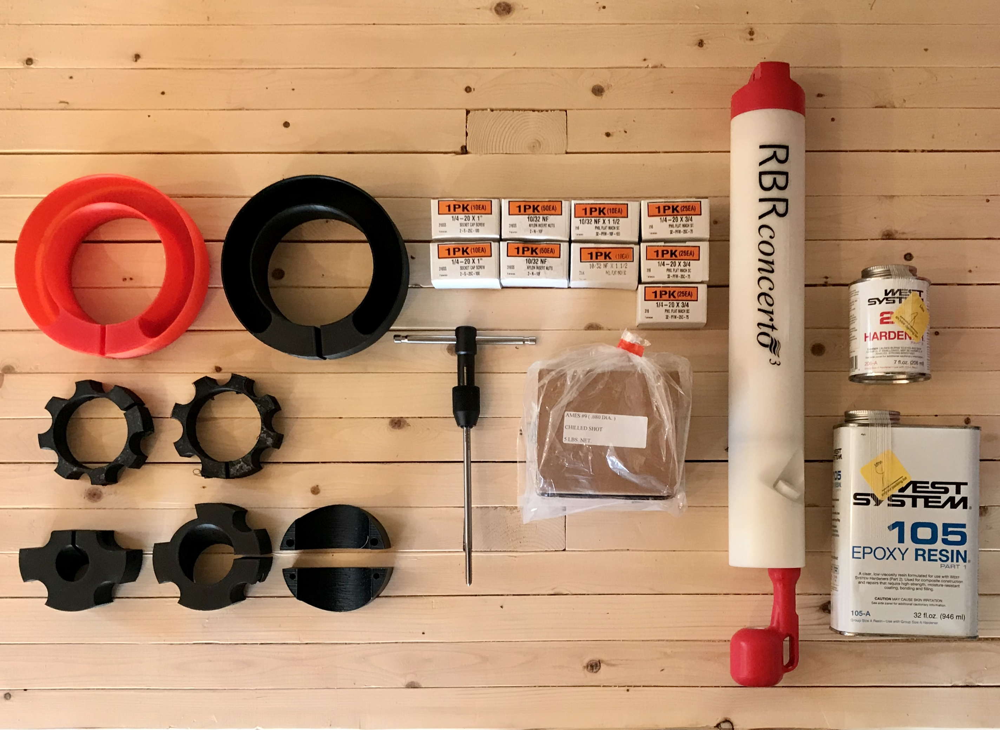
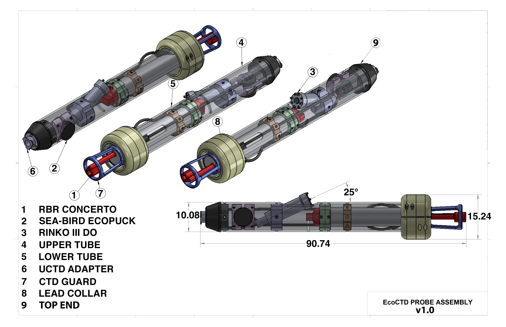
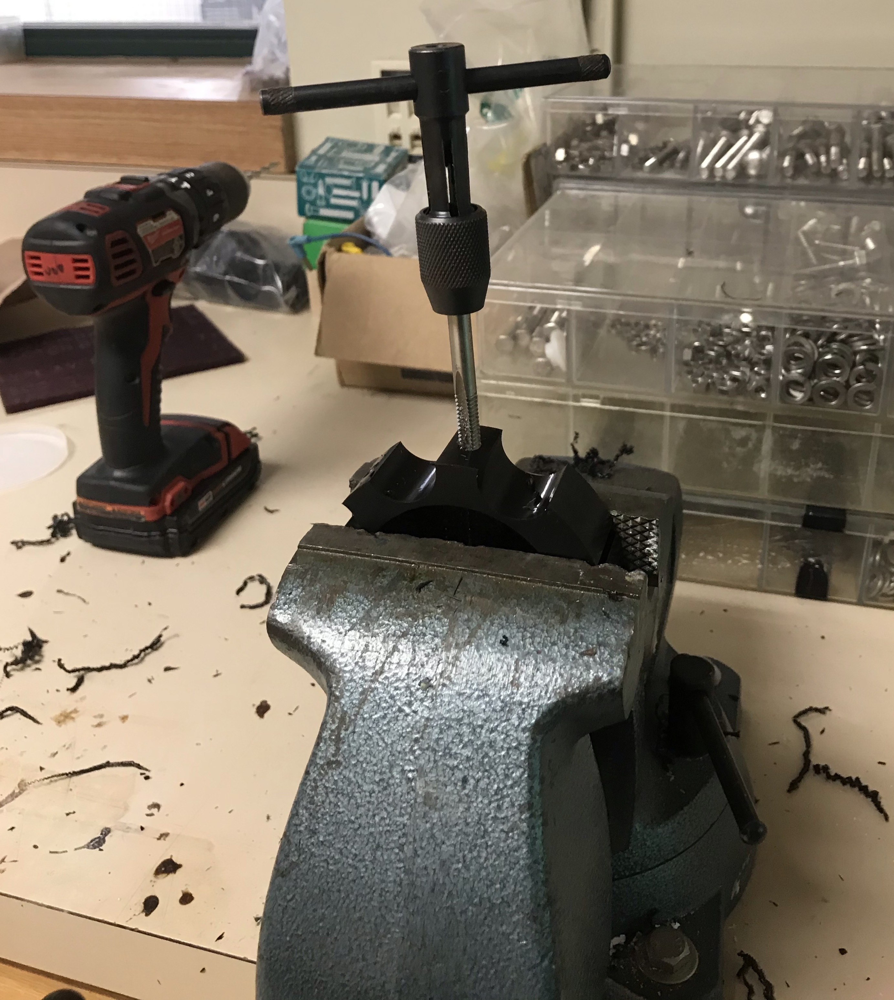
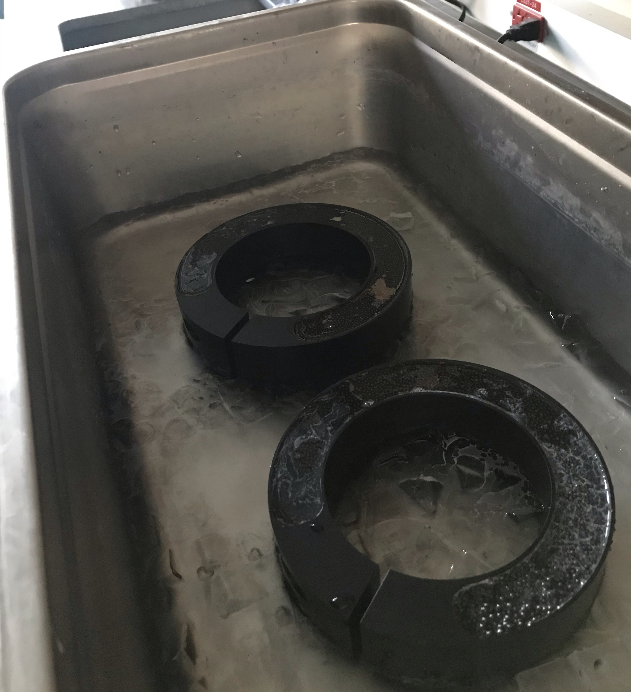
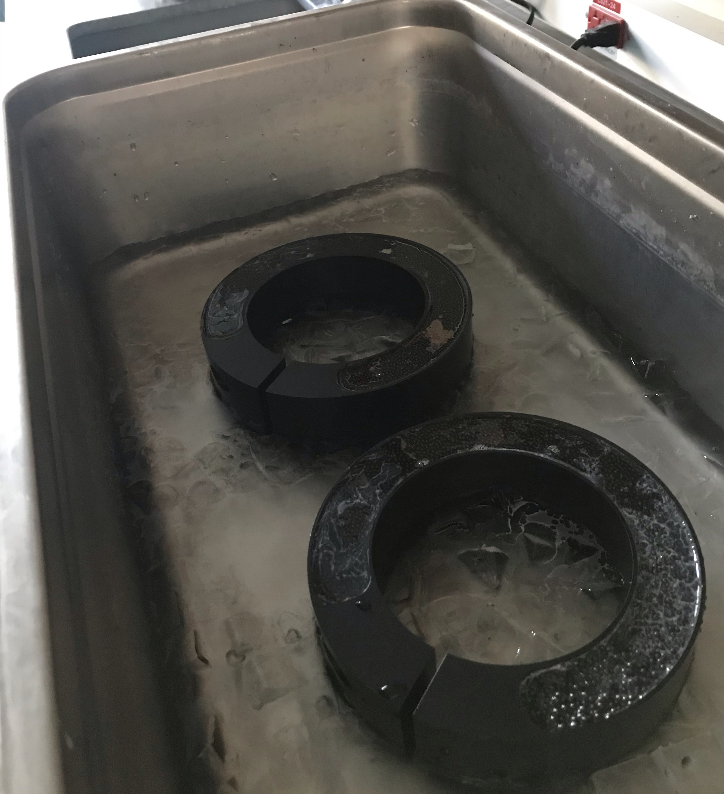

How can I get an EcoCTD?
You can make one yourself! The EcoCTD Open Project aims at providing all the knowledge and resources necessary to make an EcoCTD yourself. Below is a list of the supplies you will need, along with approximate costs. It also includes 3D design file of key parts of the EcoCTD (e.g., clamps, housing).
If you do not feel comfortable building and assembling the EcoCTD yourself, please reach out to us, we would be happy to help!

Sensors
This is the most expensive part of the design, one we have no control over. The EcoCTD is designed around three types of sensors:
- A RBRConcerto3. It acts as both a CTD and a logger, conveniently syncing the different sensors integrated into the EcoCTD. We recommend getting the guard that protects the CTD (very practical!), and a fast thermistor as the EcoCTD profiles at high speed (3-4 m/s). Our default configuration includes a fast thermistor, a sampling rate of 8Hz, and a pressure sensor rated to 750 m. We also often get a connectorized end-cap to facilitate data download, although the RBRConcerto3 can have Wi-Fi capabilities for a cost. RBR has quoted us a few of these systems, and they will be able to help you get the right sensors!
- An Optical Dissolved Oxygen (ODO) sensor. The EcoCTD can accomodate both the JFE Rinko III, or the RBRcoda3 T.ODO. Both sensors include fast-response foils for profiling applications, which is needed for the EcoCTD. Just make sure that the logger also records the temperature as measured by the ODO, it will make data processing more robust, and can act as a back-up thermistor in case of instrument failure.
- An ECOPuck optical backscatter and chlorophyll sensor. There is great flexibility on the channels that can be selected for the ECOPuck. We traditionally select Chlorophyll-fluorescence, and backscatter at 470 and 700 nm. We also selected a rhodamine channel in the past, for dye-tracing experiments. These should be selected to suit your research objectives best.
Clamps and housing
The latest design of the clamps and housing required to assemble an EcoCTD are inluded in the up-to-date GitHub release. It includes both the EcoCTD's housing, made of stainless steel aluminium, and clamps to secure the sensors to the housing. Clamps are typically made of Delrin plastic (ABS), but could also be 3D printed to save cost. Plastic is also recommended for the weight collars, as it provides the additional flexibility to easily install them on the housing tube. The most recent design includes:

- A lower tube containing the RBRConcerto3.
- An upper tube containing the bio-optical sensors (ODO and ECOPuck).
- A top end, providing the mechanical coupling with the UCTD adapter (see nomenclature below) winch.
- 2 weight collars (yellow in figure below) that contains the lead shots and adds weight to the EcoCTD for fast, free-falling profiling.
- 2 RBR clamps (orange in figure below) to attach the RBRConcerto3 to the housing.
- 1 Union clamp (green in figure below) to link the lower and upper tubes.
- 1 ODO clamp (purple in figure below) to attach the ODO to the housing. This has different designs based on the ODO selected (see abobve).
- 1 ECOPuck clamp (pink in figure below) to attach the ECOPuck to the housing.
Hardware
- 30 lbs of lead shots (like this ~$257)
- 20x Socket Head Screw, 1/4"-20 Thread Size, 1" Long (like this ~$7)
- 75x Phillips Flat Head Screws, 1/4"-20 Thread Size, 3/4" Long (like this ~$22)
- 10x Phillips Flat Head Screws, 10-32 Thread Size, 1-1/2" Long (like this ~$5)
- 50x Steel Nylon-Insert Locknut, 10-32 Thread Size (like this ~$9)
- 200 mL West System 206 Slow Hardener (like this ~$26)
- 1 L West System 105 Resin (like this ~$49)
Tools
- Long-Reach General Purpose Tap, 1/4"-20 Thread Size, 1" Thread Length (like this one ~$36), and its handle (like this ~$11)
- 1 Drill
- 1 set of hex-keys
- 1 Phillips screwdriver
- 1 kitchen scale
- 15 L ultrasonic cleaner bath (optional)
Instructions
- Order your instruments with RBR. Lead times can be quite long and you should be aware that instrument delivery might take a few months.
- Order the necessary hardware listed above. McMaster-carr is the go-to in North America.
- Manufacture the clamps: We have explored many different options to reduce costs. We first had them produced by a US company called Protolabs, which provides good quality CNC machining. Products were good but quotes were often expensive. We are currently experimenting with 3D printed clamps, which are significantly cheaper to produce. The 3DHubs online platform could be a good resource if you do not have easily access to a 3D printer.
- Manufacture the housing: This remains the most expensive part of the EcoCTD, as it is made of stainless steel. Often quoted around $3,000USD (+/- $1,000), it provides the robusteness of the EcoCTD, and additional weight to ensure a fast fall-rate. We plan to experiment with 3D printed tubes made of plastic in the future, but uncertainties remain on how that would perform under pressure and during deployment/recovery of the EcoCTD.
- Manufacture the clamps: We have explored many different options to reduce costs. We first had them produced by a US company called Protolabs, which provides good quality CNC machining. Products were good but quotes were often expensive. We are currently experimenting with 3D printed clamps, which are significantly cheaper to produce. The 3DHubs online platform could be a good resource if you do not have easily access to a 3D printer.
- Once you received the clamps, tap the different holes to the proper thread size of the screws. Tapping holes in plastic is relatively easy: We advise to first drill a pilot hole, then tap the hole, and finally test it with the proper screw. The proper size of the drill bit and tap to use can be found in summary charts like this one.
- Assemble the weight-collars: To add weight to the EcoCTD and ensure a fast profiling speed, we add two weigth collars to the housing, each weighing ~2.35 kg. You can use a kitchen scale to measure how much lead shots are required to reach the target weight. Lead shots are poured into the hollow part of the collars, which are then filled with epoxy to secure the lead shots together. This has proven to work quite well, and provides flexibility on the weight added to the EcoCTD, thus tuning the instrument fall-rate, along with the data vertical resolution. We find that pouring the epoxy onto the lead shots is best done while the collars are sitting in an ice bath in an ultrasonic cleaner. The ice bath prevents the exothermic reaction to provide too much heat, while the ultrasonic cleaner helps getting rid of small air bubbles that would compromise the integrity of the epoxy (see pictures below). This is not required, but provides very good and robust weigth collars.
- Put everything together!
- Start by placing the RBR clamps on the CTD, one near the end-cap, and one between the CTD and the external connectors. It requires a bit of fiddling to align the holes with the housing.
- Install the ODO in the upper tube first. Pay attention to how your cables are going to be organized and fed through the clamps, especially for the ECOPuck.
- Install the ECOPuck in the upper tube. If you are using a connectorized end-cap, a patch cable for data download needs access to the hole in the top end part of the housing, and the UCTD adatper.
- Test the instruments. You will likely bend cables and pull on things as you assemble the EcoCTD. It is wise to take the time to test the EcoCTD once built, in air or in water.

 
